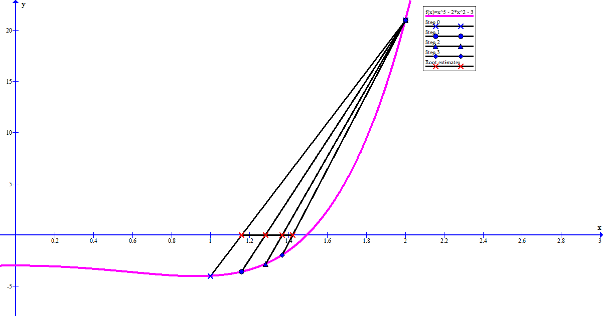
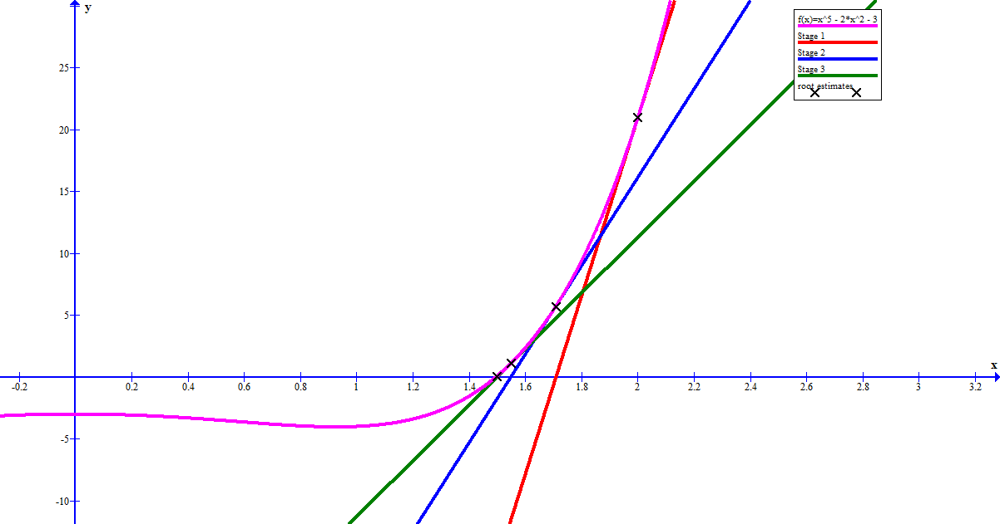

I thought that a sensible first edition to my portfolio would be a set of simple single-variable equation solvers. Most of what I have been doing is rather familiar to me from previous study, but that is not to say there is no value in revisiting it. My objective was to create code to perform the four relevant algorithms mentioned in Mathematical Methods for the Physical Sciences by K.F. Riley and to do some simple exploration in order to compare and contrast the methods.
In all of the examples, I write the code to solve \(x^5 - 2x^2 - 3 = 0\) and have defined functions \(f(x) = x^5 - 2x^2 - 3\), \(g(x) = \left(2x^2 + 3\right)^\dfrac{1}{5}\), and \(f'(x) = 5x^4 - 4x\) (referenced as 'df' in code). All the code is written in C++. My source code is here on my GitHub repository.
This method works by beginning with an interval \([A_0, B_0]\) which a root \(\alpha\) of function \(f\)is contained in and reducing the size of this interval by interpolating the line segment connnecting \((A_0, f(A_0))\) and \((B_0, f(B_0))\) to find \(x = x_0\) where this line crosses the x-axis. \(x_0\) then replaces either \(A_0\) or \(B_0\) as a bound on the interval, leaving the other bound the same. The new interval is \([A_1, B_1]\) These steps are repeated so \(x_n\) converges to \(\alpha\) with increasing \(n\).

The algorithm may be summarised:
START
(1) Pick values \(A_0\) and \(B_0\) such that the root \(\alpha \in [A_0, B_0]\) and pick a step number \(N \in \mathbb{N}\) appropriate to the desired precision.
(2) Set \(n = 0\).
(3) Calculate \(x_n\), the value of x, where the line connecting points \((A_n, f(A_n))\) and \((B_n, f(B_n))\) crosses the x-axis.
(4) If \(f(x_n)\) has the same sign as \(f(A_n)\), set \(A_{n+1} = x_n\) and \(B_{n+1} = B_n\). Otherwise, set \(B_{n+1} = x_n\) and \(A_{n+1} = A_n\).
(5) Set \(n = n + 1\).
(6) If \(n \lt N\), go back to (3).
(7) Final estimate of \(\alpha\) is \(x_{N-1}\)
END
A simple exercise in line geometry reveals that,
$$x_n = \dfrac{A_n f(B_n) - B_n f(A_n)}{f(B_n) - f(A_n)}$$
, so the algorithm is quite simple to program.
double interpolation(double A0, double B0, int N)
{
double c = 0.0;
if(abs(f(B0)) > abs(f(B0) - f(A0)))
{
cout << "The interval [" << A0 << ", " << B0 << "] does not contain the solution." << endl;
return c;
}
if(f(A0) == 0.0)
{
c = A0;
}else if(f(B0) == 0.0)
{
c = B0;
}else
{
double A = A0;
double B = B0;
double x = (A0*f(B0) - B0*f(A0))/(f(B0) - f(A0));
int pos; //indicates which side of interval is +ve
if(f(A0) > 0) pos = 0;
else pos = 1;
for(int i = 0; i < N; i++)
{
if(f(x) == 0.0)
{
c = x;
return c;
}
if(f(x) > 0.0)
{
if(pos == 0) A = x;
else B = x;
}else
{
if(pos == 0) B = x;
else A = x;
}
x = (A*f(B) - B*f(A))/(f(B) - f(A));
}
c = x;
}
return c;
}
This algorithm is rather similar to the linear interpolation method. The main difference, is that the \(x_n\) values are not found by drawing a line segment between two points on the graph of \(f(x)\), but rather they are taken to simply be the arithmetic mean of \(A_n\) and \(B_n\). $$x_n = \dfrac{A_n + B_n}{2}$$
The algorithm may be summarised:
START
(1) Pick values \(A_0\) and \(B_0\) such that the root \(\alpha \in [A_0, B_0]\) and pick a step number \(N \in \mathbb{N}\) appropriate to the desired precision.
(2) Set \(n = 0\).
(3) Calculate \(x_n\), the arithmetic mean of \(A_n\) and \(B_n\).
(4) If \(f(x_n)\) has the same sign as \(f(A_n)\), set \(A_{n+1} = x_n\) and \(B_{n+1} = B_n\). Otherwise, set \(B_{n+1} = x_n\) and \(A_{n+1} = A_n\).
(5) Set \(n = n + 1\).
(6) If \(n \lt N\), go back to (3).
(7) Final estimate of \(\alpha\) is \(x_{N-1}\). An estimate of the error on this is \(\max{\left\{x_n - A_n, B_n - x_n\right\}}\)
END
This algorithm is also very simple to program.
vector
This method works when the equation that's being solved may be written in the form, $$x = g(x)$$ where g is a function in x. It is important that when \(x\) is in the region of \(\alpha\), \(g(x)\) only varies slowly. The idea is to set up the recurrence relation, $$x_{n + 1} = g(x_n)$$ so that \(x_n\) converges to \(\alpha\) as n increases.
The algorithm may be summarised:
START
(1) Choose some \(x_0\) fairly close to \(\alpha\) and \(N \in \mathbb{N}\) appropriate to desired precision.
(2) Set \(n = 0\).
(3) Set \(x_{n + 1} = g(x_n)\)
(4) Set \(n = n + 1\).
(5) If \(n \lt N\), then go back to (3).
(6) Final estimate of \(\alpha\) is \(x_{N - 1}\).
END
The code is simply:
double rearrangedIteration(double x0, int N)
{
double x = x0;
for(int i = 0; i < N; i++)
{
x = g(x);
}
return x;
}
This method works by extrapolating along the tangent line of a function, to hone in on the root. At each step, a new estimate of the root is made, being the x value at the intersection of the tangent with the x-axis. 
The algorithm may be summarised as:
START
(1) Choose some \(x_0\) fairly close to \(\alpha\) and \(N \in \mathbb{N}\) approproate to the desired precision.
(2) Set \(n = 0\).
(3) Calculate \(x_{n+1}\), the intersection of the tangent to \(f\) at \(x = x_n\) with the x-axis.
(4) Set \(n = n + 1\).
(5) If \(n \lt N\), go back to (3).
(6) Final estimate is \(x_N\).
END
Simple analysis of this method gives the recurrence relationship,
$$x_{n + 1} = x_n - \dfrac{f(x_n)}{f'(x_n)}$$
so the code is:
double newtonRaphson(double x0, int N, bool numerical, double dx)
{
double x = x0;
for(int i = 0; i < N; i++)
{
double m;
if(numerical) m = (f(x + dx) - f(x))/dx;
else m = df(x);
x = x - f(x)/m;
}
return x;
}
First, let's discuss the relative simplicity of each algorithm. I found that the simplest algorithm to program was (iii), the Rearrangement Iteration method. This merely involved repeated multiplication of a function. Probably the most complex one to progam was either (i), the Linear Interpolation method or (ii), the Binary Chopping method. That is not to say that they were absolutely complicated, but of the four that I wrote, they required the most code.
Secondly, we discuss convergence. From Riley, I know that the Newton-Raphson method has what is known as quadratic convergence. Doing some research, I found a good definition of this here . A method is said to have \(q^\text{th}\) order convergence if,
$$\lim_{n \to \infty} R(n, q) = \lim_{n \to \infty}\dfrac{\left|x_{n + 1} - \alpha\right|}{\left|x_n - \alpha\right|^q} = \mu$$
where \(\mu\) is the 'rate of convergence'. I verified this with the following data.
This produces the following graph.
I did a similar investigation for the other methods and found they had the following convergences:
(i) Linear Interpolation; linear convergence; \(\mu \approx 0.54\)
(ii) Binary Chopping; linear convergence; \(\mu \approx 0.5\)
(iii) Rearranged Iteration; linear convergence; \(\mu \approx 0.239\)
The stronger convergence of Newton-Raphson gives it an advantage. It essentially means that the algorithm tends to be faster to converge upon the true root. With that being said, it has the disadvantage that convergence is not in-fact guaranteed. The estimate may diverge if the initial guess was not chosen carefully enough. On the other hand, something like the binary chop algorithm, so long as an interval know to contain the root is chosen, is guaranteed to converge. Binary chop also has the advantage of providing a direct means of computing an error bound. Note that this is less often the case with linear interpolation, as (in my investigations), the interval often gets shortened more on one side than the other and so on one end the margin is seemingly huge and so the interval cannot be used to give an error.
I have read that it is often reccomended to use a combination of interpolation/chopping and Newton-Raphson. The former guarantees some convergence and the latter allows for more precision in fewer steps.
Although none of these methods were particularly new to me, I think that I have learned a good amount about the idea of convergence and have a better understanding of what it means for one method to be 'faster' than another. I think the next log should cover more of the numerical methods from Riley. Either that, or I could discuss one of my past projects. I have not yet decided.